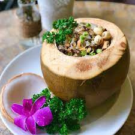

Cơm Dừa Bến Tre - món ăn độc đáo của xứ Dừa
Thứ hai, 30/2/2018, 9:15 (GMT+7)
Cơm dừa là một món ăn độc đáo của “xứ dừa” Bến Tre. Cơm dừa tuy mang nét dân dã, bình dị, đậm chất thôn quê nhưng để có được món cơm dừa ngon thì các công đoạn từ lựa chọn nguyên liệu đến chế biến đòi hỏi một sự tỉ mỉ, cầu kỳ nhất định. Nguyên liệu chính của món cơm dừa chính là dừa và gạo. Trái dừa để nấu cơm dừa phải dùng loại dừa xiêm thì cơm ra mới có vị ngọt thanh. Còn gạo, người ta thường dùng gạo trắng Hậu Giang, hạt to tròn trắng mọng.

Để nấu cơm dừa, đầu tiên người nấu sẽ cắt phần đầu của quả dừa, lấy hết nước ra ngoài. Trái dừa lúc này sẽ đóng vai trò như một chiếc nồi để nấu cơm, phần cắt trên đầu chính là nắp nồi. Gạo trắng sau khi vo sạch sẽ được cho vào quả dừa. Nước nấu cơm thay vì dùng nước lọc bình thường thì sẽ được thay bằng nước dừa vừa mới lấy ra từ quả dừa xiêm trước đó. Người nấu sẽ không để trực tiếp trái dừa trên lửa mà cho vào một nồi to, đem chưng cách thủy. Một số nơi thường cho thêm cà rốt, khoai tây, nấm thái hạt lựa, đậu cove, hạt sen... vào để tăng thêm hương vị cho cơm.
Giới Thiệu

Thành phố Bến Tre là một điểm đến hấp dẫn
Follow Me

Liên hệ
Điện thoại: 0987654321
Email: web1013@dinhnt.com